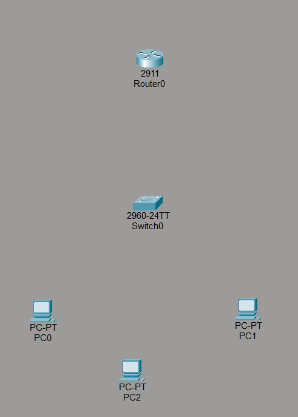
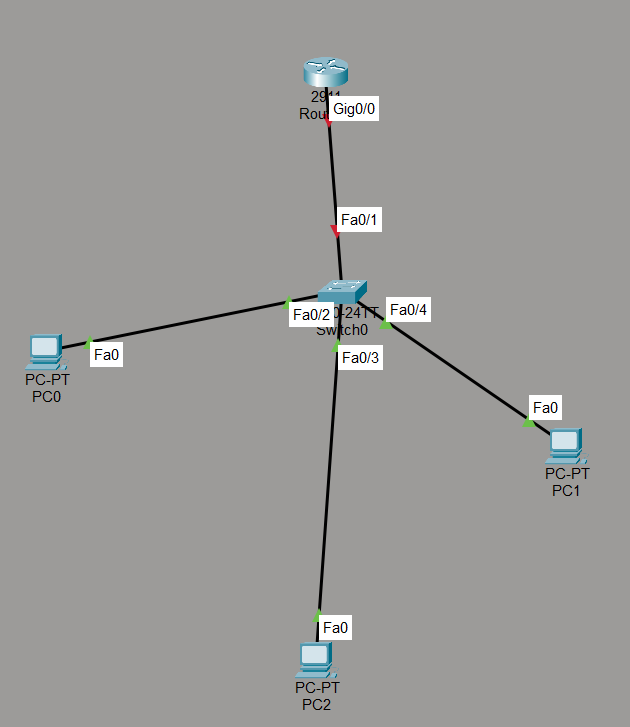

este es el primer ejercicio a elaborar de la clase manejo de redes avanzadas en el cual usaremos estos dispositivos
con frecuencia dentro de los otros temas.
el primero es el router, el cual es el dispositivo cabeza de la comunicacion entre dispositivos,
es el encargado de enrutar los paquetes entre las diferentes redes, es decir, es el encargado de enviar los
paquetes a su destino final.

el segundo es el switch, el cual es el encargado de conectar los dispositivos dentro de una misma red,
es decir, es el encargado de enviar los paquetes dentro de una misma red.

los otros dos dispositivos son la pc y la laptop, los cuales son los dispositivos finales de la comunicacion,
es decir, son los encargados de enviar y recibir los paquetes.


ahora lo que tenemos que hacer es colocar un router, un switch, y la cantidad de 3 computadoras como se vera en la siguiente imagen

(esto es opcional, se puede trabajar tranquilamente solo con 2 dispositivos o mas de 2).
a continuacion usamos el cable para conectar de la siguente forma:
Router Gig0/0 -> Switch Fa0/1;
Switch Fa0/2 -> PC0 Fa0;
Switch Fa0/3 -> PC1 Fa0;
Switch Fa0/4 -> PC2 Fa0;
asi como en la imagen:

ahora bien lo que sigue es darle una identidad a la red, en mi caso usare 192.168.100.0
(resalto que esta es la identidad de la red para el router usare a partir de ''.''.''.1 en adelante)